《Neural Networks: Zero to Hero》第 1 集：micrograd
⚡一分钟速览▼
这集讲啥：Karpathy 从一个空白的 Jupyter notebook 开始，一行一行把 micrograd 写出来。micrograd 是他放在 GitHub 上的一个玩具级 autograd（automatic gradient，自动求梯度）引擎，核心实现反向传播算法。
为什么重要：反向传播是现代每一个深度学习框架（PyTorch、JAX）数学上的核心。把它从 PyTorch 的几十万行里抠出来、缩到 100 行能完整读懂，是理解"神经网络训练到底在干什么"性价比最高的一课。这也是整门《Zero to Hero》的地基——后面几集（makemore、GPT）都建在这上面。
学完会搭出什么：
一句话主线：表达式 → 计算图 → 前向算出结果 → .backward() 倒着套链式法则填满每个节点的 .grad → 顺着梯度挪参数让 loss 变小。整集就是把这条链反复讲透。
01micrograd 是什么：一个 demo 先把它跑给你看▼
00:00开场 + autograd 引擎的定义
Karpathy 说这节课要从一个空白 notebook 出发，到结尾会定义并训练一个神经网络，让你看清"引擎盖底下"到底发生了什么。他要带你一行一行重写 micrograd——这个库两年前他只传了源码、没讲解，这次逐块拆开。
micrograd 是个 autograd 引擎。autograd = automatic gradient（自动梯度），它干的事就是实现反向传播。反向传播是一套算法，能高效地算出"某个 loss 函数对神经网络各个权重的梯度"。有了梯度，我们就能反复微调权重去把 loss 压小、让网络更准。所以反向传播是 PyTorch / JAX 这类库数学上的核心。
01:24用一个表达式 demo 展示功能
他往下滚到一个例子：两个输入 a = -4.0、b = 2.0，但不是裸数字——而是包进一个 Value 对象里。然后一路做加、乘、乘方、取负、平方、除……把 a、b 变换成 c、d，最后得到一个输出 g。micrograd 会在背后把整张数学表达式的结构记下来：它知道 c 是一次加法的结果，c 的"孩子"是 a 和 b（保留指向 a、b 的指针）。
前向传播（forward pass）就是顺着算出 g 的值（g.data ≈ 24.7）。但真正的重头戏是：可以对这个 g 调用 g.backward()。这会从 g 出发倒着穿过整张表达式图，递归地套用微积分里的链式法则，算出 g 对每个中间节点、以及对输入 a、b 的导数。比如 a.grad ≈ 138 的意思是：把 a 稍微调大一点，g 会以 138 的斜率增长。这个导数极其重要——它告诉你每个输入是怎么影响最终结果的。
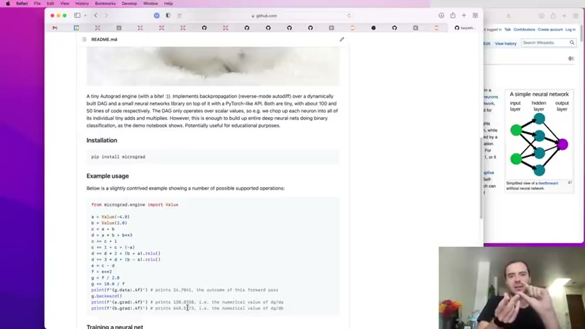
英文逐字稿（00:00–04:30）
02神经网络只是数学表达式 · 全部 100 行▼
04:30那个表达式没意义，神经网络才是重点
Karpathy 坦白上面那个表达式是他瞎编的，纯属炫耀支持哪些运算。我们真正关心的是神经网络——而神经网络也只是一个数学表达式：它把"输入数据"和"网络权重"当成输入，输出预测值（或 loss）。反过来说，反向传播本身根本不在乎神经网络，它对任意数学表达式都管用，我们只是恰好拿这套机器来训练神经网络。
05:26scalar-valued：为教学拆到最细的标量
micrograd 是个标量级（scalar-valued）的引擎——它在单个数字（像 -4、2）这个层面工作，把神经网络拆到最小的"原子"：一个个标量加法、乘法。生产里绝不会这么干（太低效），纯粹为了教学：这样就不用一上来处理 n 维张量（tensor），能专注理解反向传播和链式法则。等你真要训练大网络，再把这些标量打包成张量、靠并行加速——数学一点没变，只是为了快。
06:46整个引擎就两个文件、100 行
你以为这么强的东西代码很复杂？正相反。micrograd 只有两个文件：engine.py 是真正的 autograd 引擎（约 100 行很朴素的 Python，完全不知道神经网络是什么），nn.py 是建在引擎之上的神经网络库（约 50 行，定义神经元 / 层 / 多层感知机）。这 ~150 行就是理解神经网络训练所需的全部，剩下的一切都只是效率问题。
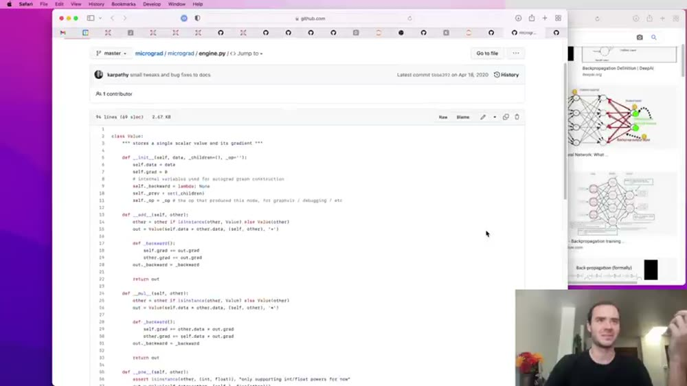
英文逐字稿（04:30–08:11）
03导数到底是什么：单变量的直觉▼
08:11先用一个抛物线建立直觉
在碰神经网络前，他要确保你对"导数"有扎实的直觉。定义一个标量函数 f(x) = 3x² - 4x + 5，输入一个标量、返回一个标量。f(3.0) 得 20。画出来是条抛物线。问题是：在某个点 x，这个函数的导数是多少？
09:49不搞符号求导，回到导数的定义
课堂上你会用乘积法则手推出导函数。但神经网络里没人会去手写整个表达式的导数——那会是上万项。所以不走符号求导，而是回到导数的定义：
导数 = lim(h→0) [ f(x+h) − f(x) ] / h翻译成大白话：在 x 点把输入轻轻推高一点点（加个很小的 h），看函数怎么反应——是涨是跌、涨跌多猛。那个"响应的陡峭程度"就是斜率，就是导数。
10:55数值近似：取一个很小的 h
定义说 h 要趋于 0，我们就取个很小的值（比如 0.001）来数值近似。在 x=3：因为 3 落在抛物线上升段，把 x 推大一点 f 会变大，所以斜率为正，算出来 ≈ 14——和手推 6x−4 代 x=3 得 14 完全吻合。在 x=−3 斜率为负（≈−22）。在 x≈2/3 附近斜率为 0（轻推 x 函数几乎不动）。注意：h 取太小（一堆 0）反而会因浮点精度出错——这是数值微分的坑。
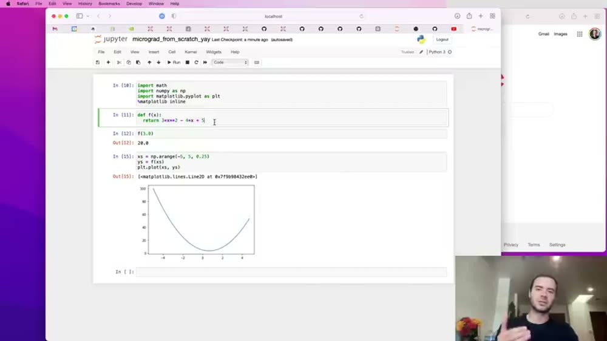
英文逐字稿（08:11–14:11）
04多输入的导数：d 对 a、b、c 各自的影响▼
14:11三个输入、一个输出
升级一点：函数 d = a*b + c，三个标量输入 a=2、b=−3、c=10，一个输出 d=4。现在要分别看 d 对 a、对 b、对 c 的导数——也就是各个输入分别对 d 有多大影响。
15:00逐个推：偏导的直觉 + 数值验证
方法照旧：固定其它输入，只把某一个加上 h，看 d 怎么变，再除以 h。
- 对 a：a 变大一点，但 b 是负的（−3），所以 d 反而变小 → 斜率为负。数值上 d 从 4 → 3.9996，斜率 ≈ −3。解析上
d(a*b+c)/da = b = −3，吻合。 - 对 b：b 变大、a 是正的（2），d 变大 → 斜率为正，等于 a = 2。
- 对 c：c 直接加进 d，c 加多少 d 加多少 → 斜率正好是 1。
这一段是后面反向传播的地基直觉：每个输入的导数（梯度）就是"我动一点点，输出会朝哪个方向、动多猛"。加法把梯度原样传下去（斜率 1），乘法把梯度乘上"另一个操作数"。记住这两条，后面手推 backprop 全靠它。
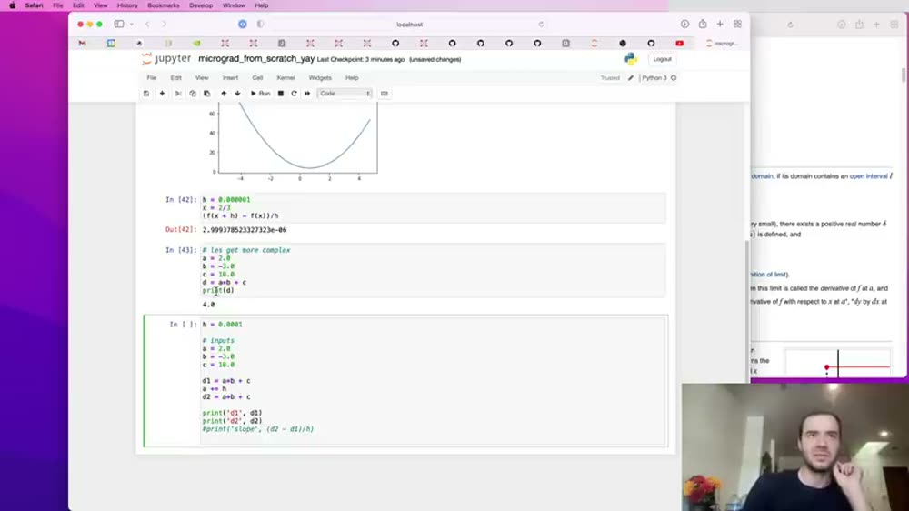
英文逐字稿（14:11–19:10）
05动手：Value 对象 + 重载加法/乘法▼
19:10最简版 Value：包住一个数字
神经网络是巨大的表达式，需要数据结构来承载它们——这就是 Value 对象。先写最简骨架：一个类，包住单个标量 data。再写 __repr__ 让它能漂亮地打印出 Value(data=2.0)。
20:03用 __add__ / __mul__ 让 Value 之间能运算
现在 a + b 会报错，因为 Python 不知道怎么加两个 Value。要用 Python 的双下划线魔术方法告诉它：写 __add__(self, other)——当你写 a + b，Python 内部其实调用 a.__add__(b)，self 是 a、other 是 b。返回一个新的 Value，包住 self.data + other.data（这里的 + 是普通浮点加法）。同理写 __mul__ 实现乘法。这样就能搭出 d = a*b + c 了。
class Value:
def __init__(self, data):
self.data = data
def __repr__(self):
return f"Value(data={self.data})"
def __add__(self, other):
return Value(self.data + other.data)
def __mul__(self, other):
return Value(self.data * other.data)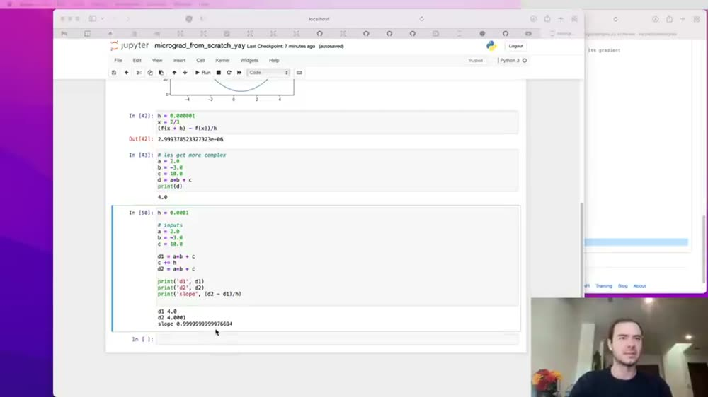
英文逐字稿（19:10–22:45）
06把计算图连起来：记住"孩子"和"是谁生的"▼
22:45_prev：记下每个 Value 的孩子
现在缺的是表达式图的连接关系。给 __init__ 加一个参数 _children（默认空），内部存成集合 self._prev = set(_children)。在 __add__/__mul__ 里，新生成的 Value 把 (self, other) 作为孩子传进去。这样每个 Value 都知道自己是由哪两个 Value 算出来的。
24:06_op：记下是哪种运算生的
再加一个 _op 字段，记录这个节点是由什么运算产生的（'+' 还是 '*'）。于是每个节点都带齐了：值（data）、孩子（_prev）、运算（_op）。整张计算图的结构就完整保存下来了——后面反向传播就是顺着这些指针倒着走。
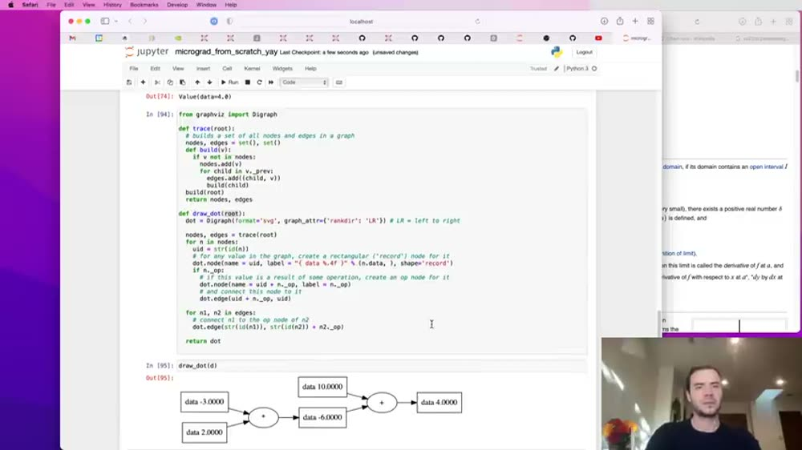
英文逐字稿（22:45–24:54）
07用 graphviz 把计算图画出来▼
24:54写个 draw_dot 函数可视化
表达式开始变大，肉眼追踪太累。Karpathy 写了个辅助函数 draw_dot，用开源的 graphviz 把表达式图画成节点和边：先递归遍历图，收集所有节点和边，再为每个 Value 画一个方块、显示它的 data，并在产生它的运算（+、*）处画一个小圆圈。
26:55给每个节点加上 label
再给 Value 加一个 label 字段（'a'、'b'、'c'……），画图时显示出来，这样一眼就知道哪个方块是哪个变量。这张图就是"前向传播"的可视化：数据从左边的输入流到右边的输出。
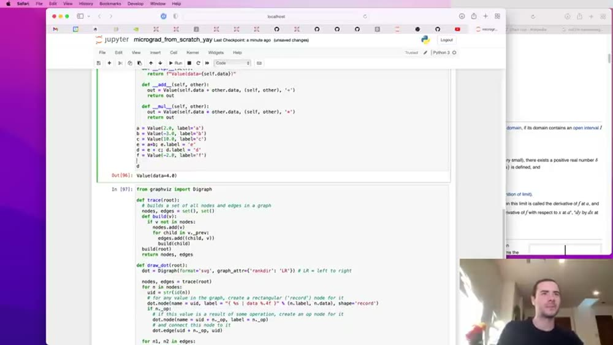
英文逐字稿（24:54–29:24）
08搭出一个带权重的"神经元"和 loss L▼
29:24把表达式接成 L，加上 grad 字段
他把图加深，最终输出一个值 L（可以想成 loss）。现在目标变了：我们想知道每个中间值和输入对 L 的导数——因为在神经网络里，我们要知道权重怎么影响 loss，才能调权重。
为此给每个 Value 加一个字段 grad，初始化为 0.0（含义：默认假设这个节点不影响 L）。grad 就是"L 对这个节点的导数"。draw_dot 也改成同时显示 data 和 grad。地基铺好了——下一步开始手动反向传播，把这些 grad 一个个填进去。
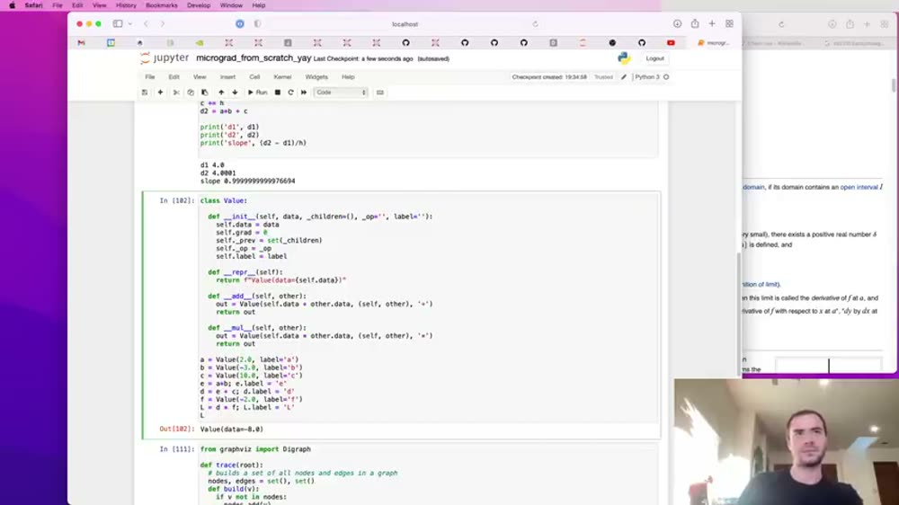
英文逐字稿（29:24–31:23）
09手动反向传播：从输出那一端开始▼
31:23最重要的一段：先建立反向传播的肌肉记忆
Karpathy 说这是"最重要"的一段——他要手动、逐节点地做一遍反向传播，让你亲眼看到梯度是怎么从输出一路填回输入的。
起点dL/dL = 1
起点最简单：L 对它自己的导数就是 1（把 L 推高一点，L 当然也涨同样多，斜率 1）。所以最右边那个节点 L.grad = 1.0。
然后往左一步步推。每一步都用那个数值近似的老办法验证：把某个中间节点的 data 加一点 h，看 L 变多少、除以 h，得到这个节点的 grad。比如对加法 L = d + f 这类，d 和 f 的 grad 都直接等于 L 对 L 的 grad（加法把梯度原样往下传）。对乘法节点，grad 要乘上"另一个操作数的 data"。这正是 S4 里那两条直觉（加法传 1、乘法乘对方）的兑现。
英文逐字稿（31:23–38:08）
10链式法则：把"远处的影响"一段段乘起来▼
38:08问题：怎么算"非直接相连"节点的梯度
L 对直接孩子的 grad 好算，但更里面的节点（c、e 这些）离 L 隔了好几层，怎么办？答案是链式法则（chain rule）。
41:50链式法则的本质：导数相乘
Karpathy 引用了那个经典比喻：如果汽车的速度是自行车的 2 倍，自行车是步行的 4 倍，那汽车就是步行的 2×4=8 倍——变化率会沿着链条相乘。数学上：
dL/dc = (dL/dd) × (dd/dc)翻译：c 对 L 的影响 = "c 怎么影响它的直接父节点 d"（这是局部的、好算的）× "d 怎么影响 L"（这是从右边已经传过来的 grad）。所以反向传播 = 在每个节点上，把"本地导数"乘以"从输出端传回来的 grad"，再继续往下传。本地导数永远是好算的（加法是 1、乘法是对方的值），全局的难题就被拆成了一连串本地的小乘法。
这是全集的核心句：反向传播 = 从输出出发，倒着走，在每个节点把"本地导数 × 上游传回来的梯度"算一下，再传给孩子。链式法则保证这一连串本地乘法乘出来的，正好就是真正的全局梯度。
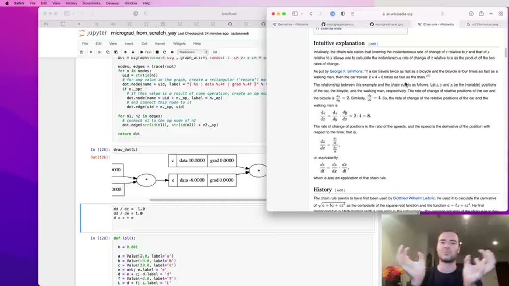
英文逐字稿（38:08–44:00）
11沿着整张图一路 backprop 到输入▼
44:00逐节点应用：+ 节点路由梯度，* 节点交换相乘
用链式法则把整张图走一遍，规律非常清爽：
- 加法节点（+）：本地导数是 1，所以它把上游梯度原样"路由"给两个孩子。Karpathy 形容加法节点像个"梯度分发器"。
- 乘法节点（*）：
e = a*b时，a 的本地导数是 b、b 的本地导数是 a，所以各自梯度 = 上游梯度 × 对方的 data。
一路推到最左边的输入，每个节点的 grad 都填好了。这时再回头看 S1 那个 demo：a.grad = 138 这种数字，就是这么一段段乘出来的。
50:23"That's it"——反向传播就这么回事
他强调：所谓反向传播，本质就是"递归地、在每个节点局部应用一次链式法则"，没有任何魔法。手动做完一遍，你已经懂了算法的全部。
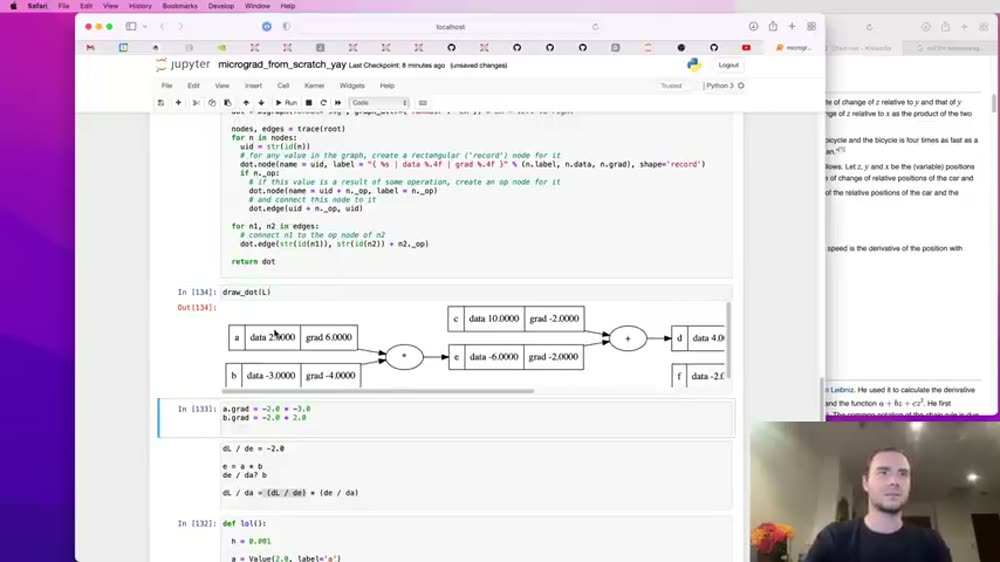
英文逐字稿（44:00–52:55）
12梯度有什么用：做一步优化让 L 增大/减小▼
52:55顺着梯度方向挪一点点输入
梯度算出来了，能干啥？做一次"优化"演示：让每个输入沿着自己梯度的方向挪一小步（data += 步长 × grad）。因为 grad 就是"往正方向推这个输入，L 会怎么变"，所以顺着 grad 推，L 就会朝预期方向变化。重新跑前向传播，果然 L 变了，而且变化方向和梯度预测一致。
这一步就是梯度下降的雏形：训练神经网络时我们想让 loss 变小，所以会往梯度的反方向挪（data −= 学习率 × grad）。这里先正向演示一遍，让你看到"梯度 → 改值 → loss 真的按预期动"这条因果链。
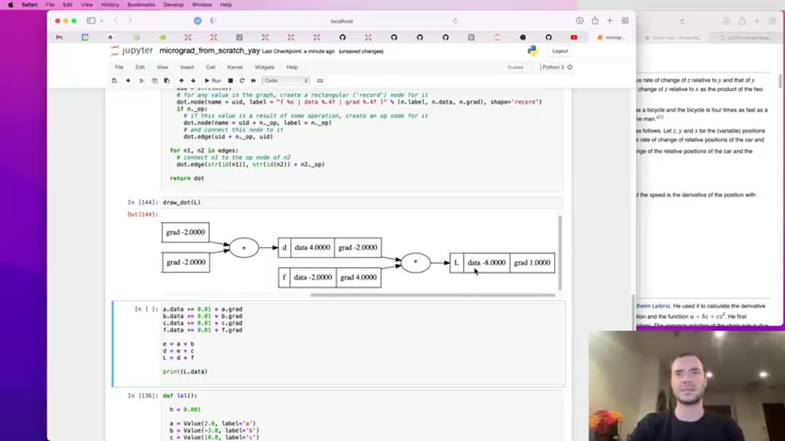
英文逐字稿（52:55–57:12）
13搭一个真神经元：加权和 + tanh 激活▼
57:12神经元的数学：∑(wᵢxᵢ) + b，再过激活函数
现在搭一个真神经元。一个神经元做的事：把各个输入 x 乘上对应的权重 w，全加起来，再加一个偏置 b，得到 n = w1·x1 + w2·x2 + b；然后把 n 喂进一个激活函数——这里用 tanh，它把任意实数"挤压"到 (−1, 1) 之间，是个 S 形曲线。
58:54给 Value 加 tanh 方法
tanh 用现有的 +、* 拆开会比较绕（涉及 e 的指数），所以他先把 tanh 作为 Value 的一个整体方法实现：直接用数学公式算出 tanh 的值，包成新 Value，并记下 _op='tanh'。关键洞察：一个运算只要你能写出它的本地导数，就能当成计算图里的一个"原子"节点——不一定非要拆成加和乘。tanh 的本地导数是 1 − tanh(n)²。
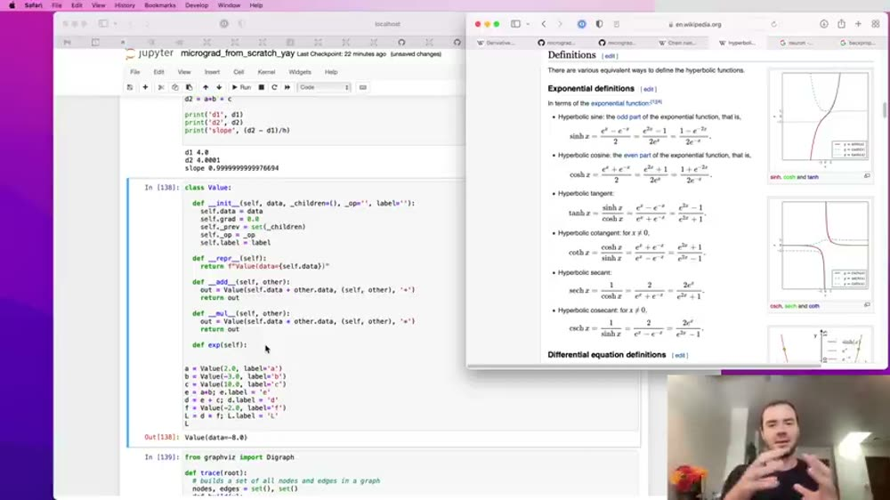
英文逐字稿（57:12–64:52）
14手推这个神经元的反向传播▼
64:52从 tanh 输出 o 一路推回权重
对这个神经元再手动 backprop 一遍。起点 o.grad = 1。第一步穿过 tanh：本地导数 1 − o²，乘上 o.grad 得到 n.grad。然后是加法（把梯度路由给加权和与偏置）、乘法（权重和输入互相交换相乘）。一路推到每个 w，就得到了"loss 对每个权重的梯度"——这正是训练时要的东西。
到这里你已经手动完成了"一个神经元的反向传播"。但你也能感到：每加一个节点就要手算一次，太累、容易错。下一步就是把这套手算逻辑写进 Value 对象，让它自己会 backward。
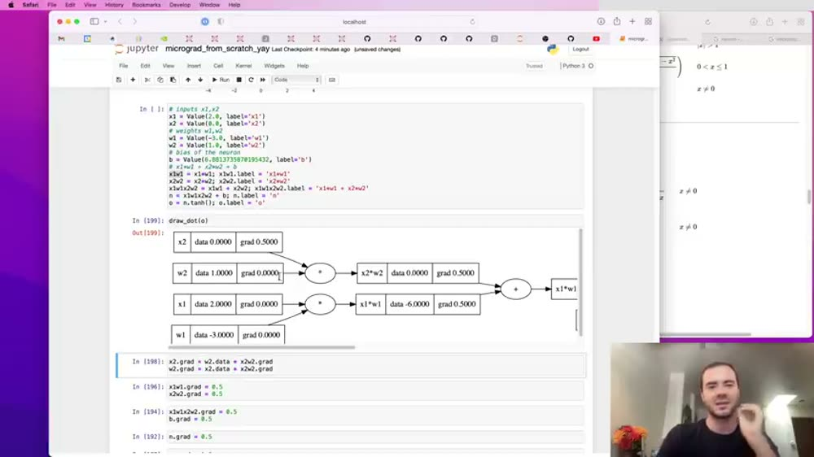
英文逐字稿（64:52–69:08）
15让它自动 backward：_backward 闭包 + 拓扑排序▼
69:08每个运算自带一个 _backward 函数
把手算逻辑写进引擎。给每个 Value 加一个 _backward 方法（默认空函数）。每个运算在生成输出 Value 时，顺手定义好"该怎么把输出的 grad 分给自己的孩子"——这是个闭包（closure），它记得自己的 self、other、out：
- 加法的 _backward：
self.grad += out.grad、other.grad += out.grad（路由） - 乘法的 _backward：
self.grad += other.data * out.grad（乘对方） - tanh 的 _backward：
self.grad += (1 − out.data²) * out.grad
78:16拓扑排序：保证调用顺序对
但不能乱序调 _backward——必须先把一个节点的 grad 算全，才能用它去更新孩子。所以要按拓扑排序（topological sort）把图排成一条线：每个节点都排在它所有孩子之前。实现是个经典 DFS，递归访问孩子、回来时把自己加进列表。
80:33封装成 .backward()
最后把这一切打包成 L.backward()：① 建拓扑序；② 把 L.grad = 1.0；③ 沿拓扑序逆序，对每个节点调它的 _backward。一行 L.backward() 就跑完了之前手动做的全部——和 S1 demo 里一模一样。
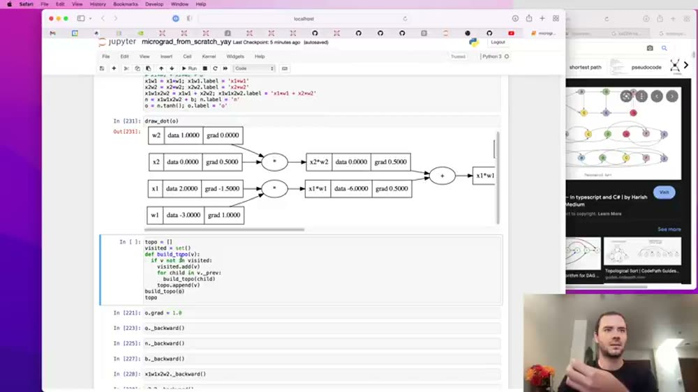
英文逐字稿（69:08–82:17）
16一个隐蔽的 bug：梯度必须累加（+=）▼
82:17当一个变量被用了多次
这里埋了个微妙的 bug。看最简单的例子：b = a + a。a 在 b 里出现了两次。如果 _backward 里写的是 self.grad = out.grad（直接赋值），那第二次赋值会覆盖第一次，a 的梯度算错（应该是 2，结果只剩 1）。
解法用 += 累加
正解：所有 _backward 里都用 += 而不是 =。当一个节点的输出流向多条路径时，它从各条路径回传的梯度要全部加起来（这正是多元链式法则：各路径贡献求和）。这也是为什么 grad 初始化成 0——好让 += 从干净的 0 开始累加。
记住这条：梯度累加，不是覆盖。一个变量被复用几次，它的梯度就是几条回传路径之和。这个 += 也直接关联到 S21 那个最经典的训练 bug。
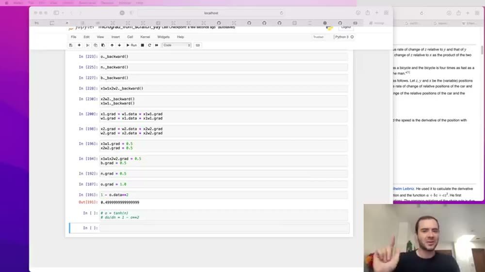
英文逐字稿（82:17–87:08）
17拆开 tanh + 补齐运算符（验证可组合性）▼
87:08把 tanh 拆成更基础的运算
之前 tanh 是当成一个整体原子。现在 Karpathy 证明它其实可以拆成更基础的运算（exp、除法、减法等）：tanh = (e^{2n}−1)/(e^{2n}+1)。为此需要补一批运算符——exp、__pow__（乘方）、除法（实现成乘 −1 次方）、减法、以及处理 Value 和普通数字混合运算的 __rmul__/__radd__ 等。每个新算子照例配一个 _backward。
结论原子还是拆开，结果一样
拆开后重新 backprop，得到的梯度和把 tanh 当整体时完全一致。这印证了一个重要思想：计算图的"原子"粒度是你自己定的——只要每个算子的本地导数正确，无论粗（整个 tanh）还是细（拆成一堆 exp/加/乘），反向传播都能算对。这正是 PyTorch 里"算子"概念的本质。
英文逐字稿（87:08–99:37）
18对照 PyTorch：你写的引擎在干同一件事▼
99:37同一个表达式，用 PyTorch 重做一遍
Karpathy 把刚才的神经元用 PyTorch 重写：用 tensor 存数据（这里都是单元素 tensor）、显式设 requires_grad=True（PyTorch 默认叶子节点不求梯度，因为多数是数据不是参数）、前向算出输出、调 .backward()、再读每个 tensor 的 .grad。
结果完全吻合 micrograd。区别只在：PyTorch 用 n 维 tensor（一次处理一大批数，靠并行加速），而 micrograd 是标量。API 和数学核心一模一样——micrograd 就是个"看得懂的、缩微版 PyTorch autograd"。你现在能读懂 PyTorch 在背后干什么了。
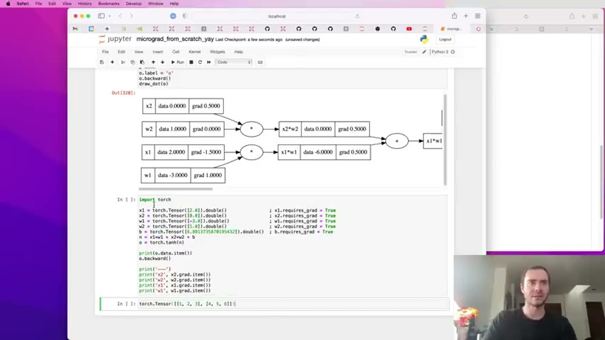
英文逐字稿（99:37–104:09）
19nn.py：把神经元堆成 Layer、再堆成 MLP▼
104:09三层封装：Neuron → Layer → MLP
有了能自动求梯度的 Value，建神经网络库就很轻松，仿照 PyTorch 的 API 写三个类：
- Neuron：构造时随机初始化一组权重 w 和一个偏置 b（都是 Value）；
__call__做"加权和 + 偏置 + tanh"，输出一个 Value。 - Layer：就是一堆 Neuron 并排，输入喂给每个神经元，收集它们的输出。
- MLP（多层感知机）：就是几个 Layer 串起来，前一层的输出当下一层的输入。
再加一个 parameters() 方法，把网络里所有权重和偏置（Value）收集成一个列表——训练时要遍历它们来更新。一个 2 层 MLP（3 输入）搭好后，总共 41 个参数。
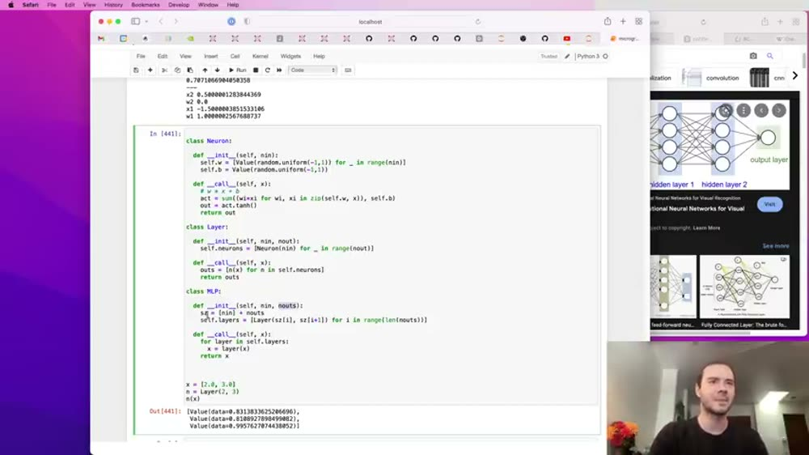
英文逐字稿（104:09–121:05）
20训练循环：loss + backward + 梯度下降▼
121:05定义 loss：预测离目标有多远
给一个小数据集（4 个样本，各有期望输出）。前向跑出预测后，定义 loss——这里用均方误差：每个预测和目标的差的平方，全加起来。loss 越小，预测越准。loss 也是个 Value，挂在整张大计算图的最末端。
122:05梯度下降：往让 loss 变小的方向挪参数
训练就是反复做这套循环（梯度下降）：
- 前向：跑一遍网络，算出 loss；
- 反向：
loss.backward()，得到每个参数对 loss 的梯度； - 更新：对每个参数
p.data −= 学习率 × p.grad——往梯度的反方向挪一小步（因为要让 loss 减小）。
学习率（learning rate）是步长，调它是门微妙手艺：太大会"冲过头"震荡，太小学得太慢。重复几十次，loss 一路下降、预测越来越接近目标。这就是神经网络训练的全部骨架。
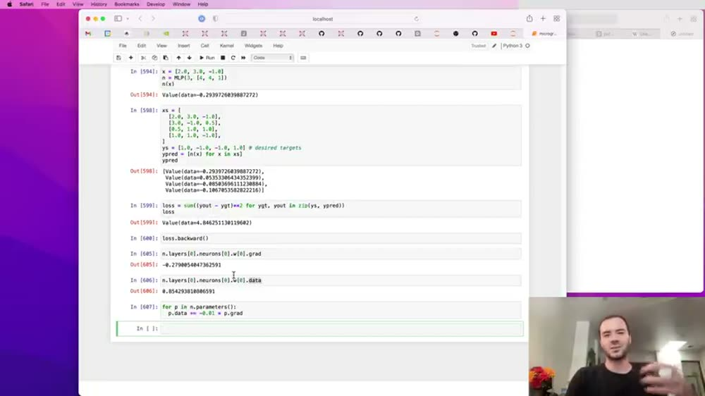
英文逐字稿（121:05–130:52）
21最经典的训练 bug：忘了 zero_grad▼
130:52"最常见的神经网络错误之一"
训练时出了点怪：Karpathy 指出我们犯了那个著名 list "最常见神经网络错误"里的第 3 条——backward 之前忘了 zero_grad（把梯度清零）。
131:03为什么会错：grad 是 += 累加的
回想 S16：所有 _backward 都用 += 累加梯度。所以如果不在每轮训练开始时把所有参数的 grad 清回 0，这一轮的梯度会叠加到上一轮的残留梯度上，方向就乱了。修复：每次 loss.backward() 之前，先遍历所有参数 p.grad = 0（这正是 PyTorch 里 optimizer.zero_grad() 干的事）。加上之后训练就稳了。
这是初学者最常踩的坑，而且和 S16 的 += 是同一枚硬币的两面：梯度累加的设计让"一个变量被复用"能正确求和，代价就是"每轮训练必须手动清零"。忘了清零，loss 就会诡异地不收敛。
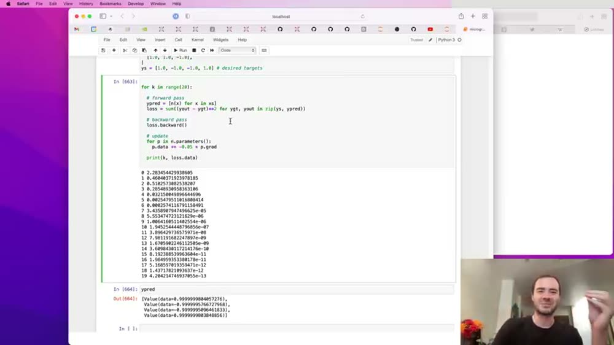
英文逐字稿（130:52–138:16）
22收尾：和真 PyTorch 的对位 + 你学到了什么▼
138:16nn.py 和 PyTorch 的 nn.Module 一一对应
Karpathy 把 micrograd 的 Neuron/Layer/MLP 和 PyTorch 的 nn.Module 对照：连 zero_grad、parameters() 这些都对得上。他还翻到真 PyTorch 源码里 tanh 的实现，让你看到"同样的本地导数公式"就藏在那里。
143:45PyTorch = 一堆乐高积木
最后的大图景：PyTorch 就是提供了一大堆现成的"乐高积木"（各种算子，每个都自带前向和 _backward），你用它们拼出网络、定义 loss，框架自动帮你 backward。而你今天亲手把这套乐高的底层机制从零造了一遍——你已经懂了引擎盖底下的全部。
英文逐字稿（138:16–结尾）
🧠费曼重讲：用最白的话讲透反向传播▼
下面这一段，假设你完全没学过微积分、也不懂神经网络。读完你应该能把它讲给别人听。
1. 先想象一条传送带工厂
把一个数学表达式想象成一座流水线工厂。原料（输入数字 a、b）从最左边进来，经过一台台机器（加法机、乘法机、tanh 机），一步步加工，最后右边吐出一个成品数字 L（你可以把它当成"这批货有多差"——也就是 loss，越小越好）。
micrograd 干的第一件事，就是把这条流水线的每一台机器、每一根传送带都记在小本本上。每个中间产品（Value）都贴着标签：我是哪台机器做出来的、我的原料是谁。这张"流水线图"就是计算图。从左到右把货走一遍、算出 L，叫前向传播。
2. 灵魂问题：到底哪个旋钮该拧
现在成品 L 不够好（loss 太大）。流水线上有很多旋钮（神经网络的权重 w）。你想让成品变好，但旋钮几十上百个，该拧哪个、往哪边拧、拧多少？
这就需要知道："我把这个旋钮拧大一丁点，最终成品 L 会变好还是变坏、变多少？" 这个"拧一点点、看 L 怎么变"的灵敏度，数学上就叫导数 / 梯度。每个旋钮都有一个自己的梯度数字。知道了所有旋钮的梯度，你就知道全厂该怎么调了。
啊原来如此 ①：梯度不是什么玄学，它就是一句话——"这个旋钮对最终结果的影响有多大、是正是负"。导数 = 轻轻推一下、看结果怎么晃。
3. 笨办法 vs 聪明办法
笨办法：真的去拧每个旋钮一丁点、跑一遍整条流水线、看 L 变多少。几百个旋钮就要跑几百遍流水线——慢死。神经网络有几百万个旋钮，这办法直接报废。
聪明办法就是反向传播。它只跑一遍流水线（前向），然后从成品 L 这头倒着往回走一遍，就能把所有旋钮的梯度一次性全算出来。怎么做到的？靠一个朴素到不可思议的小技巧——链式法则。
4. 链式法则：影响力会"接力相乘"
打个比方：汽车比自行车快 2 倍，自行车比走路快 4 倍，那汽车比走路快几倍？2×4=8 倍。变化率沿着链条一节一节乘过去。
放到流水线上：旋钮 w 不直接连着成品 L，中间隔着好几台机器。但没关系——
- "w 影响它下一台机器的程度"很好算（就在本地，是一道小学算术）；
- "那台机器影响 L 的程度"——这个数已经从右边传回来了。
- 两者一乘，就是"w 影响 L 的程度"。
于是难题被拆碎了：每台机器只需要管好自己门口那一小段（本地导数），然后把右边传来的梯度乘上去，再传给左边的邻居。一节一节往左接力，走到最左边，所有旋钮的梯度就都齐了。这就是反向传播的全部秘密。
啊原来如此 ②：反向传播不是一个吓人的大算法，它就是"每个节点干一件小事：把上游传来的梯度，乘以我这台机器的本地斜率，再往下传"。把这件小事在图上从右到左做一遍，就完事了。
5. 落到代码：每台机器自带一张"退货单"
micrograd 怎么把这个写进代码？每台机器（每个运算）在生产成品时，顺手写好一张"退货单"——一个 _backward 小函数，里面就一句话："等右边把梯度退回来给我，我该怎么分给我的原料。"
- 加法机最实在：原料涨多少、成品就涨多少，所以它把退回来的梯度原样分给两个原料（本地斜率是 1）。
- 乘法机会"交换"：a×b 里，a 的影响力取决于 b 有多大，所以 a 拿到的梯度 = 退回的梯度 × b，反之亦然。
- tanh 机按它自己的公式（本地斜率 = 1−输出²）来分。
调用 L.backward() 时：先在成品 L 上盖个章"L 对自己的影响是 1"（这是起点），然后从右到左挨个让每台机器执行自己的退货单。梯度就像水一样，从 L 这头一路倒灌回所有旋钮。
6. 两个必须注意的小钉子
钉子一：先后顺序不能乱（拓扑排序）。一台机器得等"它喂给的所有下游"都把梯度退回来、攒齐了，才能往上游退。所以要先给流水线排个序，保证每台机器都排在它下游的后面，再倒着执行。
钉子二：梯度要"累加"不能"覆盖"（+= 和 zero_grad）。如果一个旋钮的产品分了好几条岔路供给后面，那它的总影响 = 各条岔路退回的梯度加起来（所以代码里用 +=）。副作用是：每开始新一轮训练前，得先把所有旋钮的梯度清零，不然这轮的会叠在上轮的残渣上——这就是初学者最爱忘的 zero_grad。
7. 最后一步：调旋钮（梯度下降）
现在每个旋钮都知道自己的梯度了（"我变大，L 会变大/变小多少"）。我们想让 L（loss）变小，那就让每个旋钮往梯度的反方向挪一小步。挪多大叫学习率——步子太大会扯过头，太小走得慢。
把"前向算 loss → backward 求梯度 → 清零后下一轮 → 顺着负梯度挪旋钮"这套循环重复几十上百遍，loss 就一路下滑，网络的预测越来越准。恭喜，这就是训练一个神经网络的全过程。
一句话复述（你现在应该能讲出来）：神经网络是个大流水线工厂，前向跑一遍出 loss；反向传播靠链式法则、从 loss 倒着走、让每台机器把"本地斜率 × 上游梯度"接力相乘，一次算出所有旋钮的梯度；然后顺着让 loss 变小的方向把旋钮挪一点点，反复几十轮，网络就学会了。PyTorch 干的是同一件事，只是机器更多、跑得更快。
🗂核心概念卡▼
Value 对象_prev（孩子）和 _op（运算）记录，draw_dot 能把它画出来。a*b+c，每步生成新 Value、算好 data。grad 字段，初始 0，backward 后被填上"L 对它的导数"。_backward，梯度从 L 灌回全图。.backward()L.grad=1.0、再逆序逐个执行 _backward。和 PyTorch 同名同功能。_backward 闭包+= 累加。p.grad=0，忘了就是最经典的 bug。p.data -= lr * p.grad，重复几十轮看 loss 下降。✅这集最该记住的几条▼
① 神经网络只是一个大数学表达式。输入数据 + 权重进去，预测/loss 出来。别被"神经网络"四个字吓到——它和 a*b+c 是同类，只是更大。
② 反向传播 = 从输出倒着走 + 在每个节点套一次链式法则。每个节点只干一件小事：本地导数 × 上游梯度，再往下传。没有魔法，一遍前向 + 一遍反向就拿到所有梯度。
③ 训练 = 前向算 loss → backward 求梯度 → 沿负梯度挪参数，循环。这套"梯度下降"骨架是所有神经网络训练的共同心脏，学习率是关键旋钮。
④ 梯度要累加（+=），所以每轮训练前必须 zero_grad。一个变量复用多次，梯度是各路径之和；忘了清零是初学者最经典的 bug。
⑤ PyTorch 和这 100 行干的是同一件事。区别只是张量化 + 并行加速 + 海量现成算子（乐高积木）。读懂 micrograd，你就读懂了所有深度学习框架的数学内核。
🔗References▼
- Andrej Karpathy — The spelled-out intro to neural networks and backpropagation: building micrograd（《Neural Networks: Zero to Hero》第 1 集，本精读的原视频，时长 2:25:52）· youtu.be/VMj-3S1tku0
- karpathy/micrograd — 视频里从零重建的那个仓库（engine.py ~100 行 autograd 引擎 + nn.py 神经网络库）· github.com/karpathy/micrograd
- Neural Networks: Zero to Hero — 整门课程播放列表（micrograd → makemore → GPT）· github.com/karpathy/nn-zero-to-hero
逐字稿基于视频 YouTube 自动字幕清洗去重而成（自动字幕含识别误差，已做断句与可读性修整，技术名词以正文中文笔记为准）。关键帧截图按 frame_NNN = (NNN−1)×180 秒映射到视频时间。